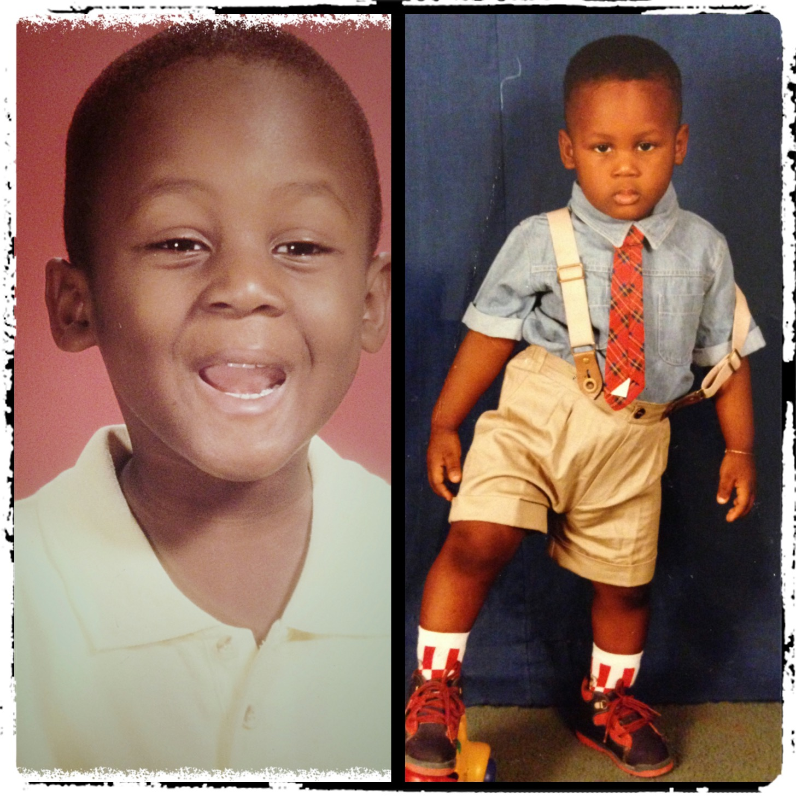

Telecommunicaitions Major. Aspiring Lawyer

Hi! My name is Karlens Direny and I am a Communications student at the University of Florida with a focus on Media and Society. I grew up in South Florida, but was born in Haiti and relocated to the U.S. with my parents when I was young. Social media is vital in today’s digital marketplace and has greatly influenced my career choices. I relish in all things that deal with entertainment and plan to pursue a law degree specializing in the entertainment industry while also tying this into social media and how these interactions affect on another. I love to dabble in interior design, listen to music, and creating content that will expand my digital footprint.